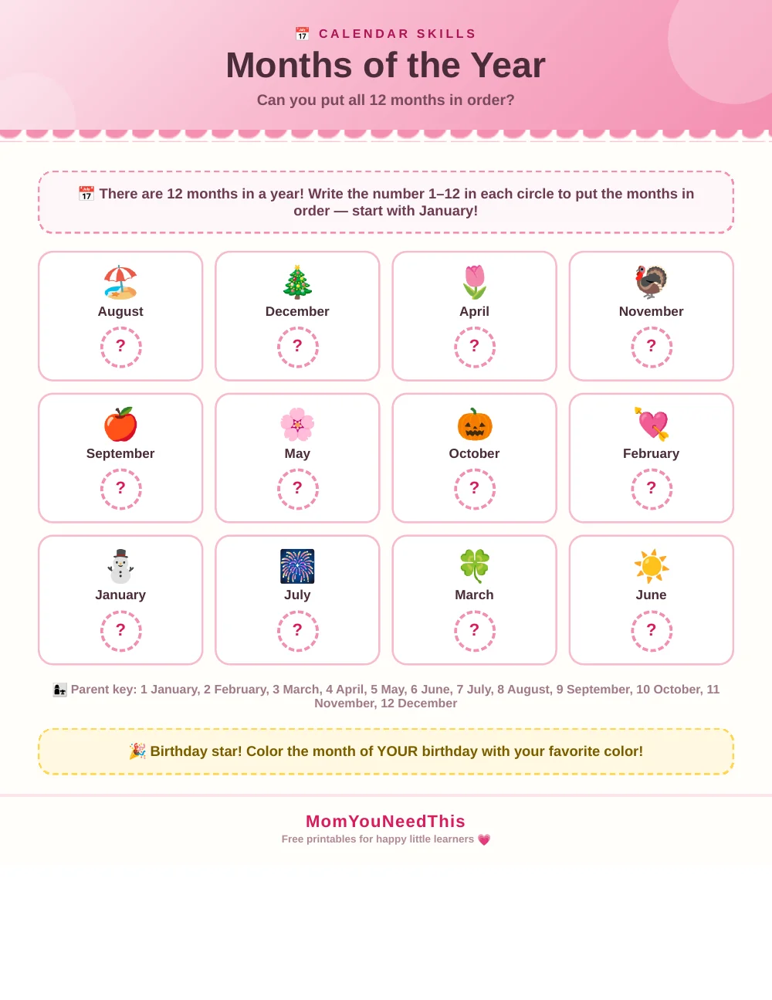

Preschool New Year Activities Months of the Year Activities — Free Printables for Kids
Help toddlers and preschoolers learn the twelve months of the year with these fun, kid-friendly printable activities. Practice saying the months in order, spotting which month comes next, and talking about birthdays and seasons.
Quick Answer
This preschool new year activity is a free printable months-of-the-year page designed for toddlers and preschoolers ages 2-5. The worksheet includes hands-on exercises that build early learning skills through play. Download and print at home with no signup needed — no account required, just print and start learning.
At a Glance
- Ages: Toddlers and preschoolers (ages 2–5)
- Activity: Learning the twelve months of the year, in order
- Skills: Month names and sequencing
- Format: Printable worksheet (PDF)
- Cost: Free, no signup
🗓️ Learn The Months Of The Year
Use these activities to help your child learn the names of all twelve months, put them in the correct order, and begin understanding how months, seasons, and special days fit together.
The Twelve Months in Order
The printable puts the months in front of your child; this list puts them in order, with the season each one belongs to (for the northern half of the world, where winter starts the year) and one thing to spot in it:
- January — winter. The year begins; look for snow and early dark evenings.
- February — winter. The shortest month, with Valentine's Day in the middle.
- March — spring begins. First buds, first green shoots.
- April — spring. Rain showers and puddles worth jumping in.
- May — spring. Flowers everywhere the April rain landed.
- June — summer begins. The longest days of the year.
- July — summer. Picnics, sprinklers and fireworks.
- August — summer. The hottest days, and back-to-school shopping at the end.
- September — fall begins. School starts; the first leaves turn.
- October — fall. Pumpkins, costumes and Halloween.
- November — fall. Cozy evenings; dark comes early.
- December — winter begins again. Holiday lights — and the year comes full circle back to January.
Chant the list in order, then quiz out of order: "What comes after June?" A birthday is the best anchor of all — find your child's month first, and count forward and back from it.
Free Months of the Year Activities

How To Use These Activities
Say the twelve months together in a fun song or chant, then ask your child to point to each month on the printable. Talk about which month your family birthdays fall in and which season each month belongs to. Use the printable for calendar time, preschool lessons, or quiet learning.
Why Learn The Months Of The Year?
Learning the months of the year helps children build early time concepts, sequencing skills, and calendar confidence. Connecting months to seasons, holidays, and birthdays makes time feel real and meaningful for little learners.
How Many Days? The Knuckle Trick
Months do not all hold the same number of days — and there is a trick for remembering which, using nothing but a fist.
Make a fist and look at your knuckles. Count the months across them, one knuckle or one valley per month, starting with January on the first knuckle. Every month that lands on a knuckle has 31 days; every month in a valley has 30 — except February, the odd one out, with 28 days (29 in a leap year).
Run out of knuckles at July? Start again on the first knuckle for August. That restart is exactly why July and August, side by side, both get 31 days.
The old rhyme says the same thing in words: "30 days hath September, April, June and November" — every other month has 31, except February alone.
🎁 Keep Exploring Free Learning Activities
Discover more printable activities, toddler resources, and learning ideas created for busy parents.
🎁 View All Free Resources🖨️ How to Use This Printable
Get started in minutes — everything here is free and made for busy parents.
- Download the printable. Tap the download button to save the free Months of the Year Activities file to your device.
- Print it out. Use any home printer and regular paper — cardstock works great for pages little hands will use again and again. The print button opens the full-size page in a new tab if you prefer to print from there.
- Learn together. Sit with your child, follow the activity, and keep it playful. Short sessions work best.
- Explore more. Check the free printables linked below for your next activity.
🎉 Preschool New Year Activities
These preschool new year activities make January feel like a fresh start. New calendars, new months, and new things to count and color — the new year is a perfect excuse to learn the months. Our preschool new year activities are free printables for ages 3 to 5.
The best preschool new year activities connect the calendar to real life. What month is your birthday? What season comes next? Counting down to a holiday makes the months feel real instead of abstract.
Tip: use this preschool new year activity to start a monthly routine — revisit it all year long to build serious calendar skills by December.
See months-of-the-year printable for more.
❓ Months of the Year Activities FAQs
Is the Months of the Year Activities printable free?
Yes — every printable on MomYouNeedThis is 100% free to download and print. No signup, no payment, just tap the download button.
How do I download and print it?
Tap the download button on this page to save the file, then print it on regular paper with any home printer. Cardstock makes extra-durable pages for little hands.
What does my child learn from this activity?
Learning the months of the year builds sequencing, memory, and early calendar skills. Children also learn to connect time words like month, year, and season to real life — birthdays, holidays, and weather changes.
What preschool new year activities teach the months?
Calendar coloring, month matching, and counting days all work well. Preschool new year activities that pair each month with a season or holiday make the calendar click for little learners.
🔗 More Free Printables You’ll Love
Pair this printable with more free learning activities from the MomYouNeedThis library.
- 📆 Days of the Week ActivitiesLearn the seven days of the week in order.
- 📅 Calendar Learning ActivitiesExplore all calendar learning activities.
- 🔤 Alphabet Coloring PagesFree A to Z alphabet coloring printables for toddlers and preschoolers.
- 🎏 Free 5-Minute Toddler ActivitiesQuick learning activities for busy little ones.